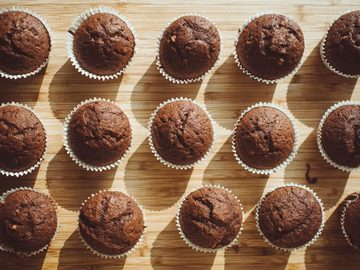

← Anterior
Perfekt mit haben
Siguiente →
Präteritum

Algunos verbos forman el Perfekt con sein en vez de haben. Generalmente son verbos de movimiento o cambio de estado.
| Infinitivo | Partizip II | Español | Ejemplo |
|---|---|---|---|
| gehen | gegangen | ir / caminar | Ich bin zur Schule gegangen. |
| kommen | gekommen | venir | Er ist spät gekommen. |
| fahren | gefahren | ir (vehículo) | Wir sind nach München gefahren. |
| fliegen | geflogen | volar | Sie ist nach Mexiko geflogen. |
| laufen | gelaufen | correr / caminar | Er ist 10 km gelaufen. |
| bleiben | geblieben | quedarse | Ich bin zu Hause geblieben. |
| sein | gewesen | ser/estar | Du bist in Berlin gewesen. |
| werden | geworden | volverse | Es ist kalt geworden. |
| aufstehen | aufgestanden | levantarse | Ich bin früh aufgestanden. |
| einschlafen | eingeschlafen | dormirse | Das Kind ist eingeschlafen. |
| steigen | gestiegen | subir | Die Preise sind gestiegen. |
| wachsen | gewachsen | crecer | Das Kind ist schnell gewachsen. |
| passieren | passiert | suceder | Was ist passiert? |
| umziehen | umgezogen | mudarse | Wir sind nach Berlin umgezogen. |
| fallen | gefallen | caer(se) | Er ist die Treppe hinuntergefallen. |
| schwimmen | geschwommen | nadar | Sie ist über den See geschwommen. |
| Verbo | Perfekt | Ejemplo |
|---|---|---|
| aufstehen | ist aufgestanden | Ich bin um sechs aufgestanden. |
| aufwachen | ist aufgewacht | Ich bin sehr früh aufgewacht. |
| einschlafen | ist eingeschlafen | Das Baby ist schnell eingeschlafen. |
| umziehen | ist umgezogen | Wir sind nach Berlin umgezogen. |
| ankommen | ist angekommen | Der Zug ist pünktlich angekommen. |
| abfahren | ist abgefahren | Der Bus ist schon abgefahren. |
| einsteigen | ist eingestiegen | Sie ist in die S-Bahn eingestiegen. |
| aussteigen | ist ausgestiegen | Wir sind am Hauptbahnhof ausgestiegen. |
| passieren | ist passiert | Was ist passiert? |
| werden | ist geworden | Sie ist Ärztin geworden. |
| wachsen | ist gewachsen | Das Kind ist schnell gewachsen. |
| laufen | ist gelaufen | Ich bin zehn Kilometer gelaufen. |
| Lo correcto | Por qué | No digas |
|---|---|---|
| Ich bin nach Hause gegangen. | movimiento: sein | Ich habe nach Hause gegangen. ✗ |
| Was ist passiert? | passieren va con sein | Was hat passiert? ✗ |
| Ich bin um sieben aufgestanden. | cambio de estado: sein, y el ge en medio | Ich habe um sieben aufgestanden. ✗ |
| Sie ist Lehrerin geworden. | werden va con sein | Sie hat Lehrerin geworden. ✗ |
| Wir sind zu Hause geblieben. | bleiben va con sein aunque no te muevas | Wir haben zu Hause geblieben. ✗ |